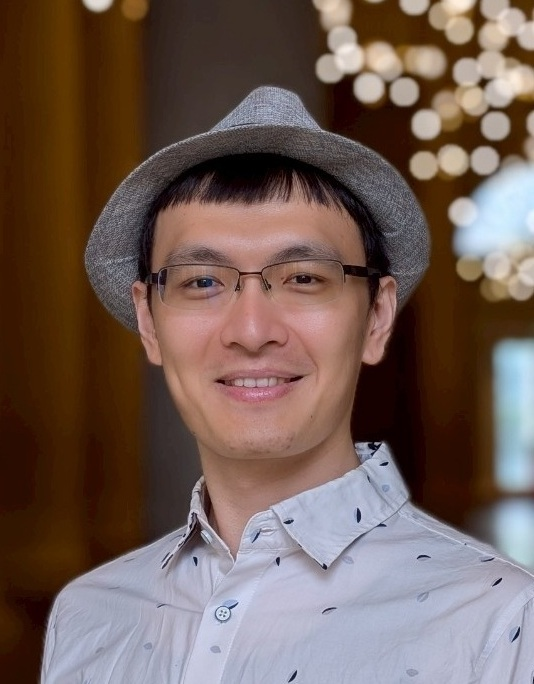
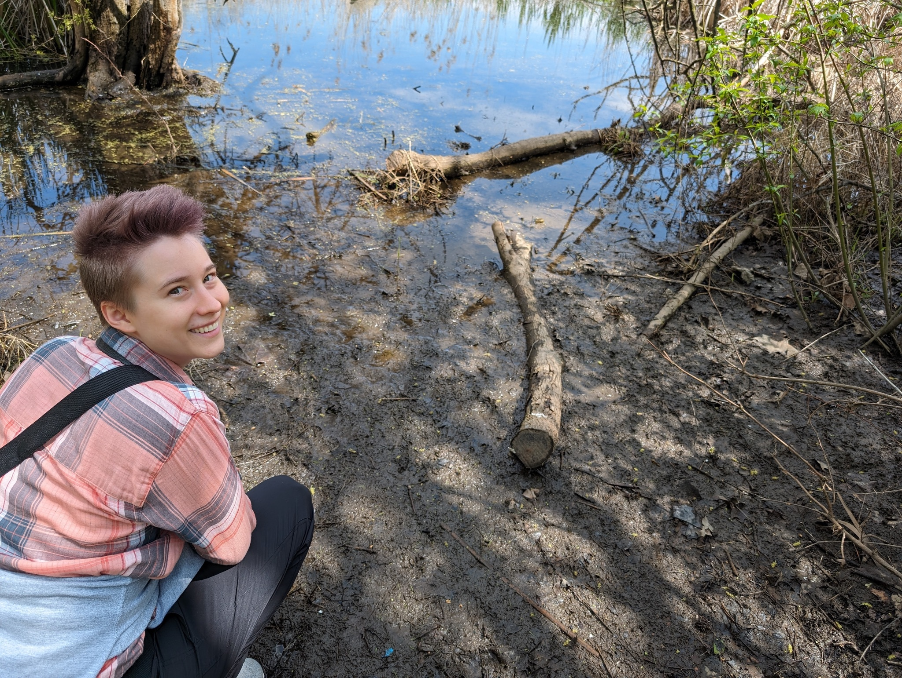
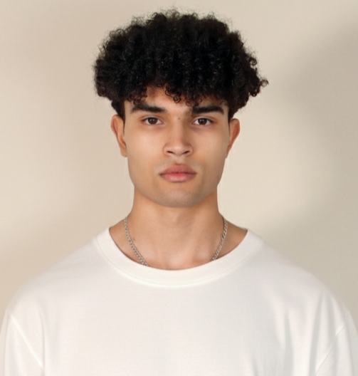
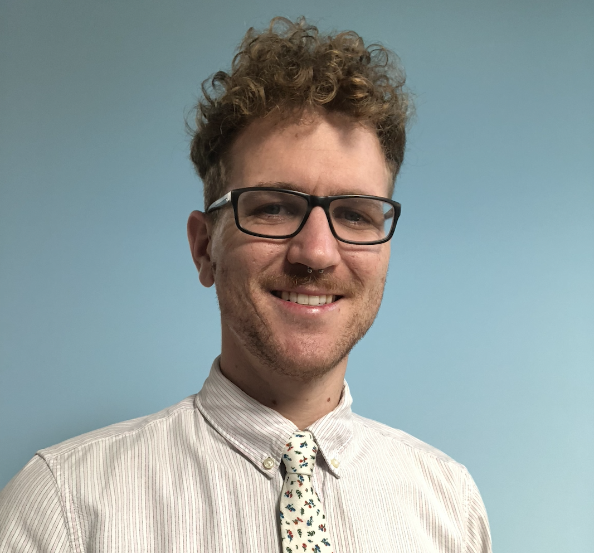
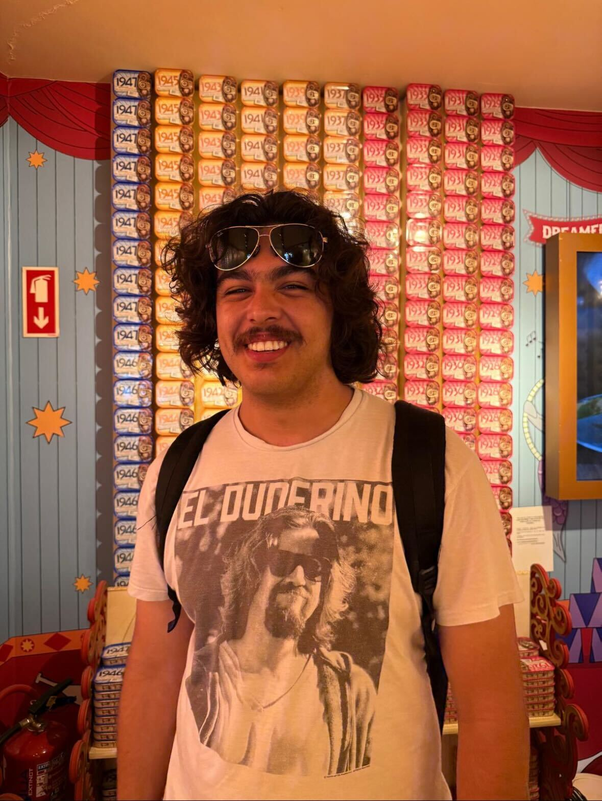
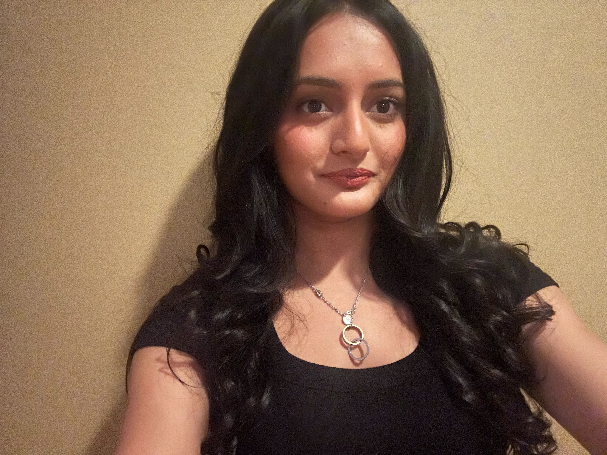
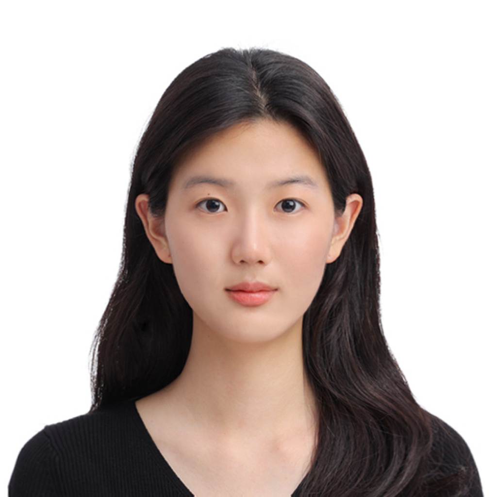

People
Faculty

Marina Bedny Marina Bedny CV 410-516-2841 marina.bedny at jhu dot edu 225 Ames Hall
Post-Doctoral Fellows

Emily Silvano esilva8 at jhu dot edu Research interests: I am interested in understanding how different life experiences can affect sentence processing and the neural basis of language. Currently my research investigates how congenitally blind people and sighted people process complex sentences during reading and listening.
{kind=link}

Yun-Fei Liu yliu291 at jhu dot edu Research Interests: I study how the brain learns brand-new skills like computer programming. Coding is a very recent invention, and our brains don’t grow new parts for it; instead, they cleverly "recycle" systems for logical reasoning and recruits help from language systems. By combining brain imaging and behavioral research, I seek to understand not just how we program computers, but how our minds program themselves to learn.
Graduate Students
{kind=link}

Abby Clements acleme18 at jh dot edu Research Interests: I study how different modalities and experiences shape language in the brain. I specifically work with braille and ASL.

Miriam Hauptman mhauptm1 at jhu dot edu Research Interests: I use neural and behavioral measures to study how human concepts change with experience.
Akshi alnu1 at jhu dot edu Research Interests: I use functional neuroimaging to study the neural basis of American Sign Language in Deaf signers and to investigate how diverse early life language experiences shape the neural systems that support language.

Ziwen Wang zwang252 at jhu dot edu Research Interests: I am interested in how diverse experiences - sensory, linguistic, cultural, and developmental - shape the way humans form concepts and acquire knowledge. My current research uses behavioral and fMRI methods to examine the roles of language and first-person experience in intuitive theories of perception, as well as the neural basis of braille literacy.
Lab Manager

Elizabeth Droubi edroubi1 at jh dot edu Research Interests: Brain plasticity and concepts in d/Deaf individuals and sign language users.
Research Assistants
{kind=link}

Quinton Covington qcoving2 at jhu dot edu Research Interests: I am studying how different interpretations of a single event can shape neural responses.
{kind=link}

Matthew Sampson msampso7 at jhu dot edu
Undergraduate Research Assistants

Yanni Larsen elarse12 at jhu dot edu Research Interests: My research interests are about neuroplasticity and how the brain adapts to change, as well as how conception varies based on lived experience.
{kind=link}

Wes Schantz-Aviles wschant2 at jh dot edu Research Interests: How language is processed and represented physically in the brain.
{kind=link}

Riya Karnik rkarnik2 at jh dot edu Research Interests: My research interests are in cognitive and developmental neuroscience as well as neurological disorders.
{kind=link}

Yein Han yhan90 at jh dot edu Research Interests: I am interested in how blind individuals utilize neural circuits while reading braille, and more broadly, in how neuroplasticity allows different life experiences to shape human cognition and thought processes.
Alumni
Sophia Keil - Former research assistant
Daria Yatsunova - Former lab manager
Maria Zimmermann - Former postdoc

Zaida McClinton - Former graduate student

Lisa Munz - Former postdoc

Liz Saccone - Former postdoc

Hannah Yun - Former research assistant

Ziqi Chen - Former lab manager

Mengyu Tian - Former postdoc

Brianna Aheimer - Former lab manager

Judy Kim - Former graduate student

Giulia Elli - Former graduate student

Shipra Kanjlia - Former graduate student

Nora Harhen - Former lab manager

Rita Loiotile - Former graduate student

Rashi Pant - Former lab manager

Connor Lane - Former lab manager
Undergraduate Alumni

Gabriel Pernell

Mita Singh

Clarissa Alfonso

Catherine Chen

Laila Paredes

Erin Brush

Carol Lu

Rhys Gough

Grace Lee

Verónica Montané
Collaborators
{kind=link}
Piotr Tomaszewski